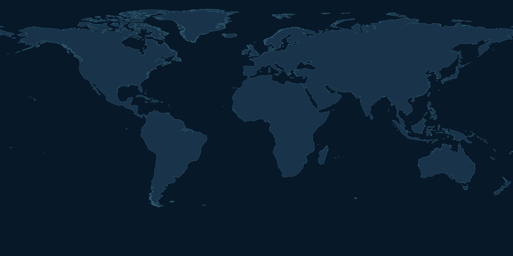

Scan Earth. Hear lightning.
Select an observation date. Every recorded flash from that day appears on the map. The scanner moves west to east; its musical notes come from flashes in each longitude band.

All observed flashes for the dateFlash generating a melody note│ Vertical scanning line
Scientific meaning: This is a longitude scan, not a chronological replay of lightning events. ISS LIS observations have incomplete geographic/time coverage. A band with few detections does not necessarily have less actual lightning globally.
View data-to-note mapping and scientific provenance
Data: data/processed/lightning.json, ISS LIS V3 lightning flashes. Every valid detection for the selected UTC date is drawn (some dots overlap). Each longitude band can trigger up to five notes using real detections. Latitude maps to pitch, radiance to note velocity, detection count influences voices. Fixed harmonizing chords/bass are explicitly a musical choice, not NASA measurements. Note selection prioritizes a spread of flash radiances. The scan is 24 seconds long for every date. Dates at download boundaries may be incomplete.
Play to see a source flash
Uses your existing NASA JSON. Tone.js loads from the internet. Original NASA movie is not used.